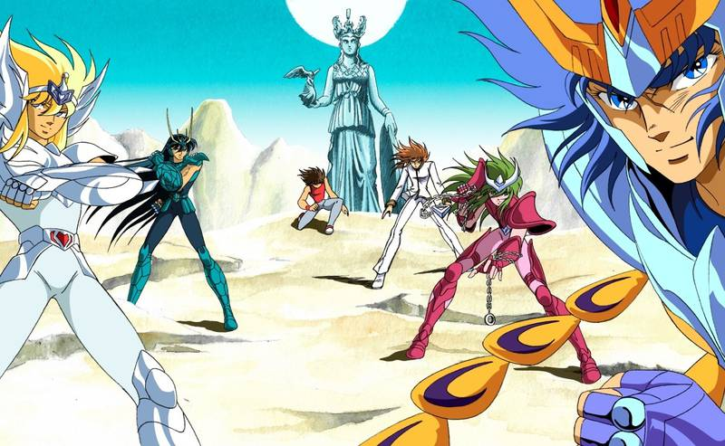

Saint Seiya
Personajes
Obras
Noticias
Contacto
Noticias
La carta que Akira Toriyama le escribió a Masami Kurumada

El primer capitulo de preludio de pegaso
 La carta que Akira Toriyama le escribió a Masami Kurumada
La carta que Akira Toriyama le escribió a Masami Kurumada
La carta que Akira Toriyama le escribió a Masami Kurumada
La carta que Akira Toriyama le escribió a Masami Kurumada